リプトン YELLOWMONDAY - バナー広告
イラストのコンセプト
- 黄色い背景色に補色の黒で強調
- イラストは、「MONDAY」の文字から連想
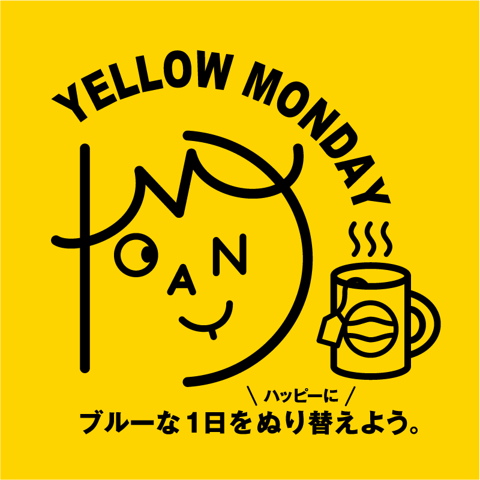
下絵（テンプレート）
- 「ファイル」メニュー → 「配置」
- または、ブログの仕上がりを「コピー&ペースト」後に、ペーストレイヤーのサムネイルをダブルクリックして同様のオプション設定にする
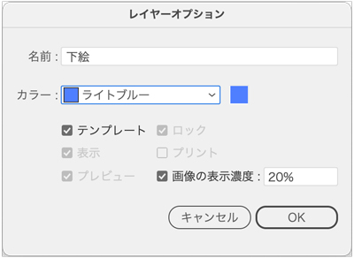
MONDAY部分を線幅指定で描く
- 線幅「14px」（顔の内側は、12px）
- 線端の形状・角の形状ともに「丸」
- 下絵を正確になぞるよりも、線の滑らかさを優先します
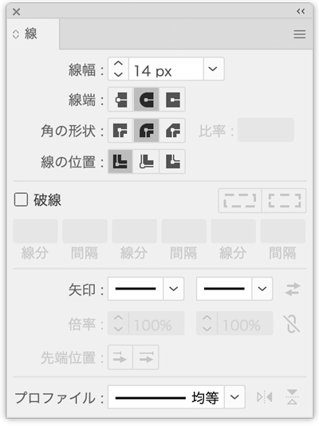
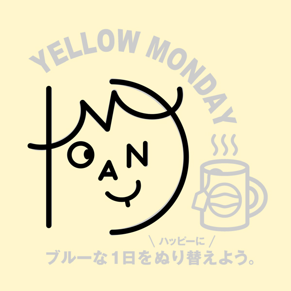
パスのアウトライン
- バランスがとれたら、パスのアウトラインにします
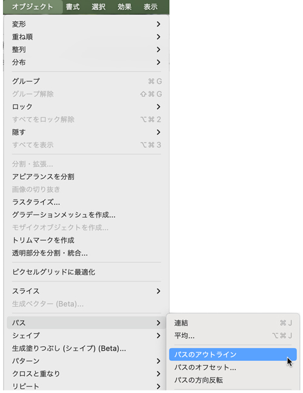
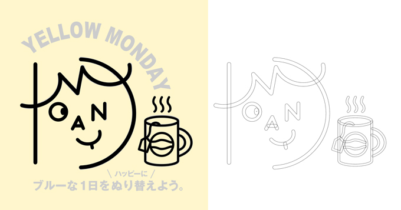
曲線に沿った文字
- 「パス上文字ツール」用の曲線を描きます
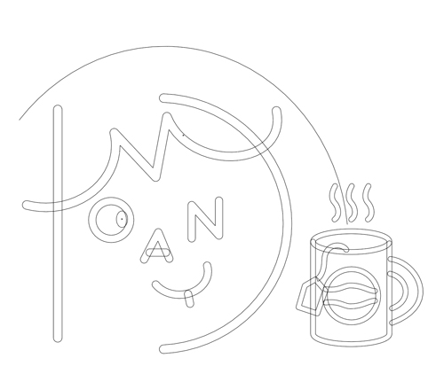
「パス上文字ツール」で曲線をクリック
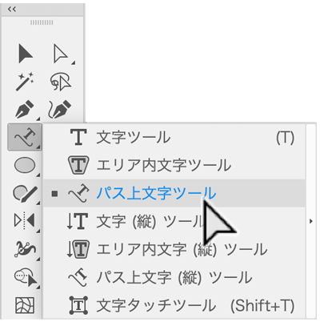
文字を入力
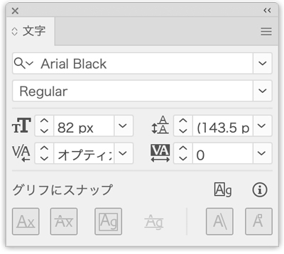
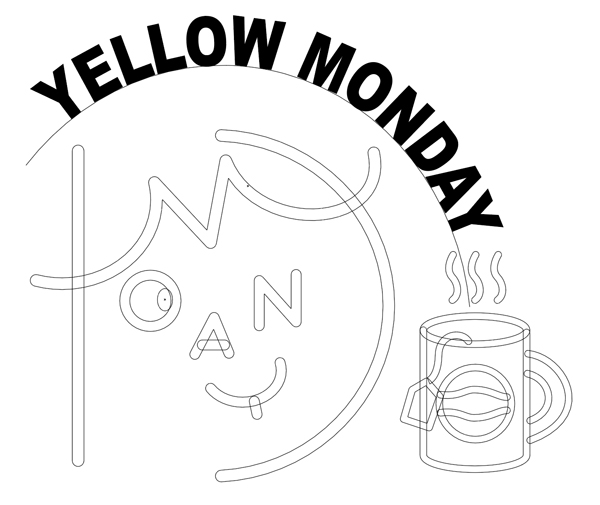
文字をアウトライン
- 文字入力のやり直しの必要がなければ「アウトライン」にします
（他PCで見たときに、文字がなくて文字化けしないため）
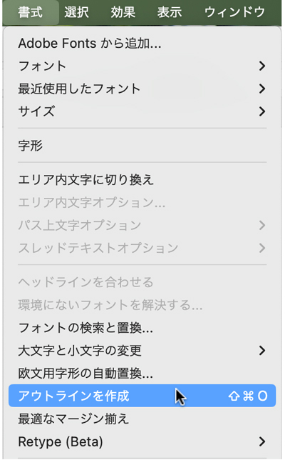
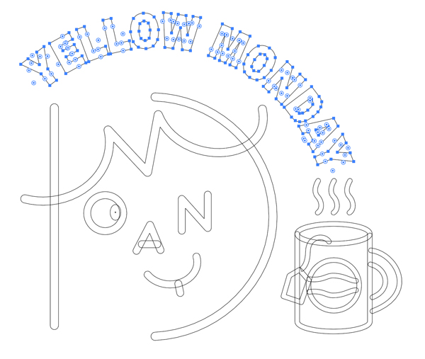
- 下部の文字は、適宜入力
背景
- 正方形を描き、着色すれば完成
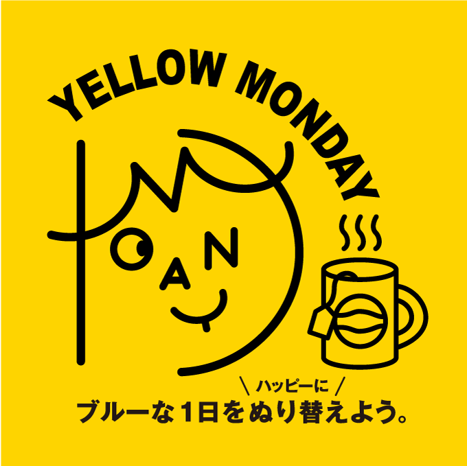